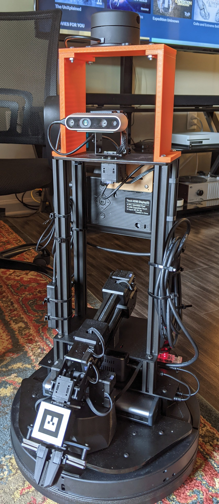
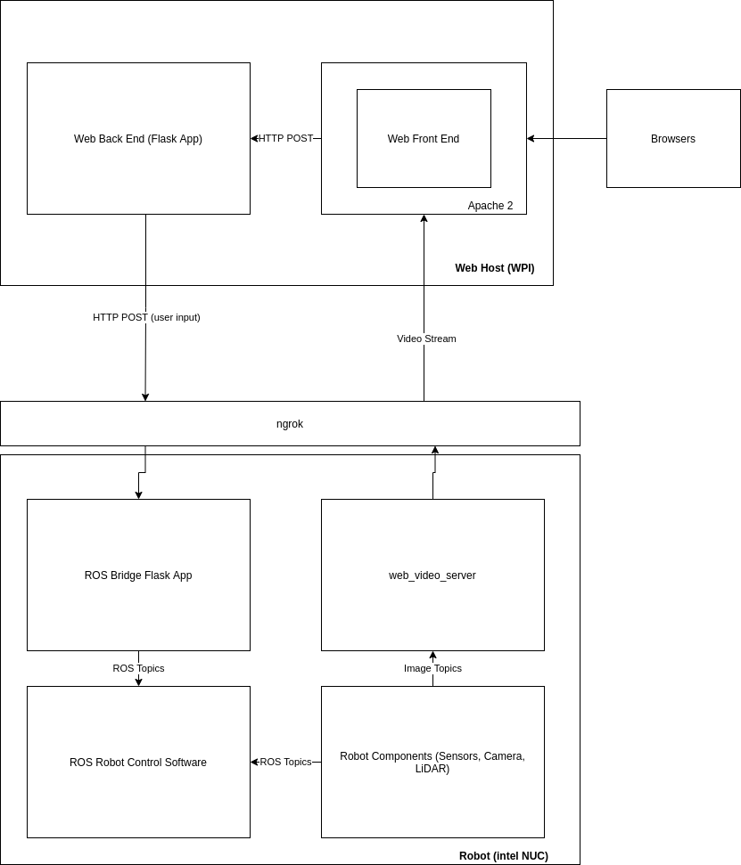

Low Cost Pandemic Telenursing Robot
This page outlines the work I have completed thus far on a low-cost telenursing robot platform based on the LoCoBot research robotics platform. This platform was designed for deployment in African university hospitals for the purpose of increasing the overall effectiveness of nursing staff in pandemic conditions. The LoCoBot platform uses a Kubuki mobile base, a 5-DOF manipulator arm, and an Intel RealSense camera on a pan-tilt base for world interfacing operations. The customization efforts performed on this robot platform include the addition of a ydlidar G2 sensor on top of a 3D-printed mechanical platform to enhance localization abilities of the robot. A touch screen was also mounted on the back of the robot's equipment tower to serve as a human-robot interface. The most up to date version of the developed software can be found in this GitHub repository. The robot in its current state can be seen in the figure below.
Cross-Domain Control Web Interface
A custom web interface was developed to operate the robot remotely. This interface allowed for direct control of the robot's various axes of motion through javascript joysticks and push buttons within the interface itself. User input was then fed to a backend python flask application that made HTTP requests to another flask application running on the robot. This robot-side flask application was able to format and republish user input data to the robot in a way that was consumed by the different robot control API's made available through the pyRobot ROS software stack. Visual feedback from the robot's pan-tilt Intel RealSense camera was streamed back to the user interface from the robot to aid in teleoperation. The overall system architecture can be seen in the figure below.
Several interface usability experients were performed using a robot in a gazebo simulation. Once we were satisfied with the performance of the robot, the same software stack was set up using the physical LoCoBot platform. It was found that the system's overall responsiveness was good, and the robot was indeed controllable via the web interface from a phone and a standard desktop computer. A video showing the constructed teleoperation paradigm can be seen in the video below.
New Sensor Integration
From here, the LiDAR sensor was verified to work using the provided driver from Yglidar. The robot was teleoperated and the data obtained from the lidar was streamed through the cross-web data bridge. The generated point cloud was the visualized within an RVIZ instance. This demonstration can be seen in the video below.
Automatic Viewpoint Selection For Manipulation
The first shared autonomy developed for this platform is automatic viewpoint selection for manipulator control. In this paradigm, a vision target is attached to the end of the robotic arm end-effector. This vision target is isolated within frames obtained by the pan-tilt camera and the center point of the target is obtained. A buffer zone is defined within the image, and if the target strays outside of the buffer zone, the camera moves accordingly to bring it back into view. If the target stays within the buffer, no motion commands are given to the pan-tilt camera. This paradigm allows the user to focus on telemanipulation tasks without needing to focus on adjusting the pan or tilt of the camera itself. Please see the demo video below for more information.